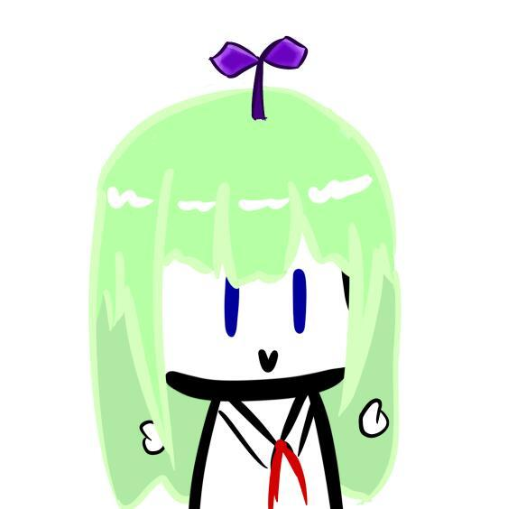
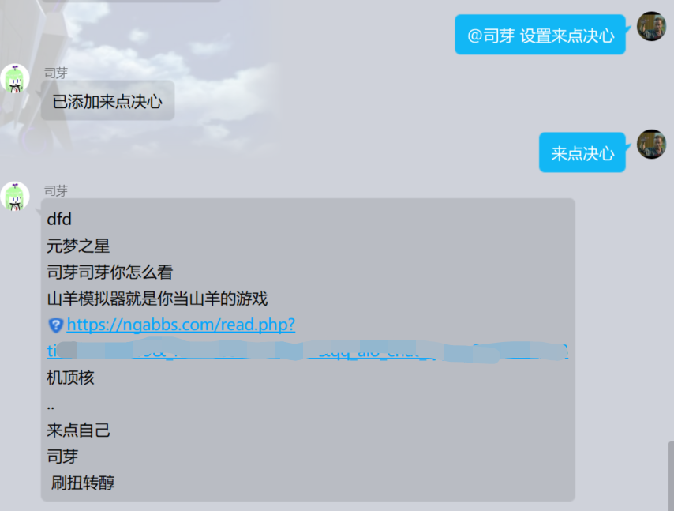
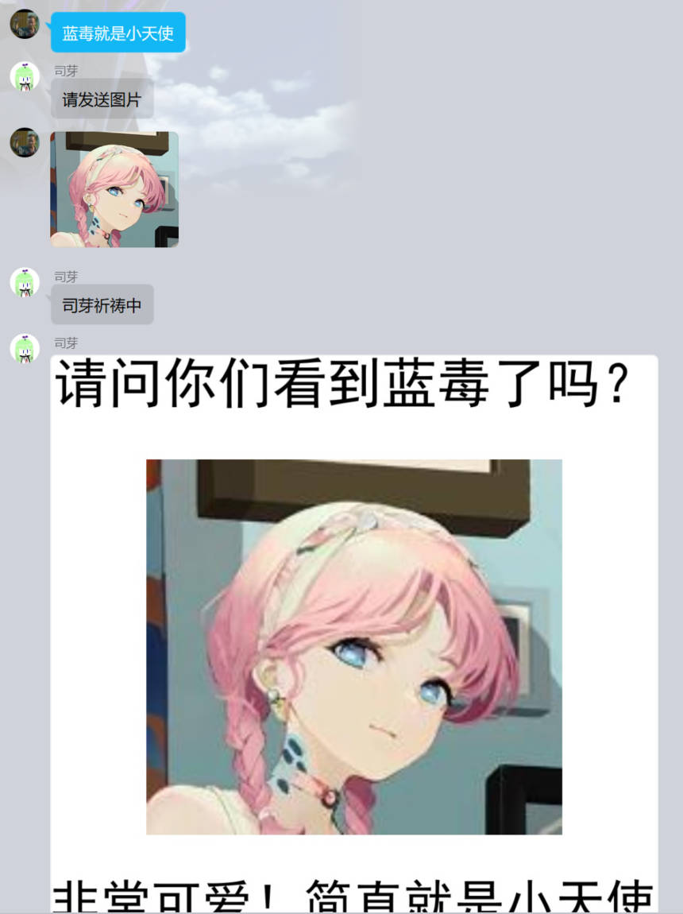
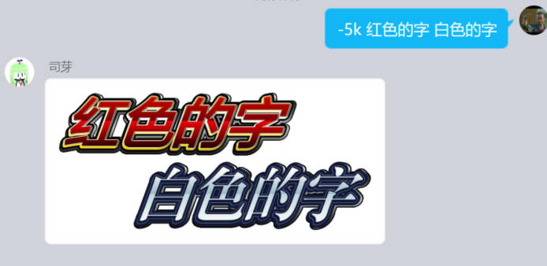
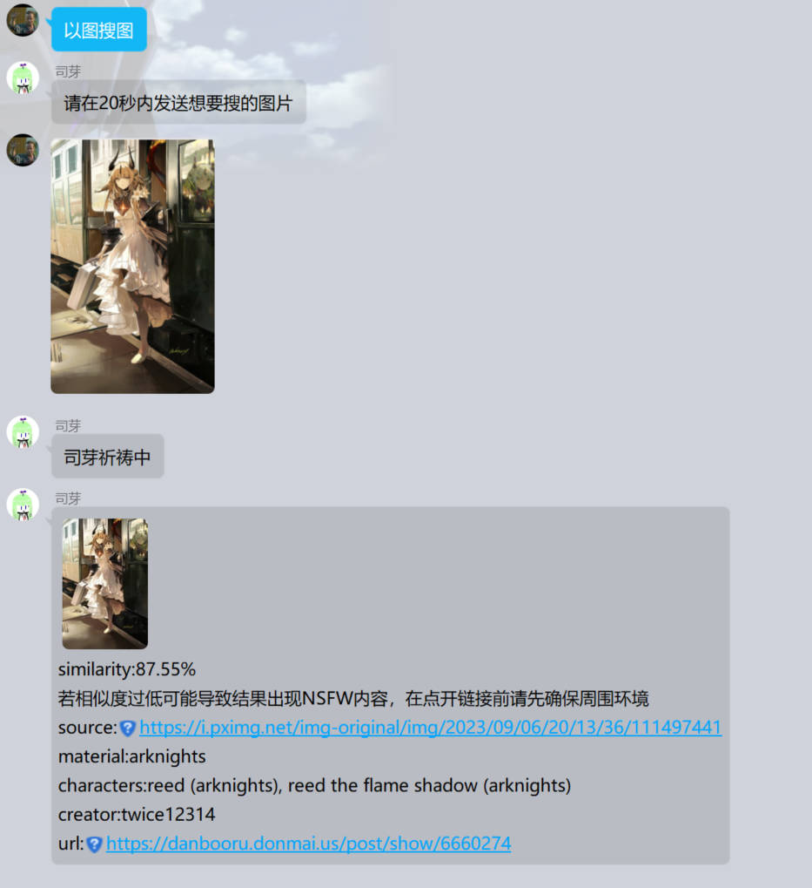
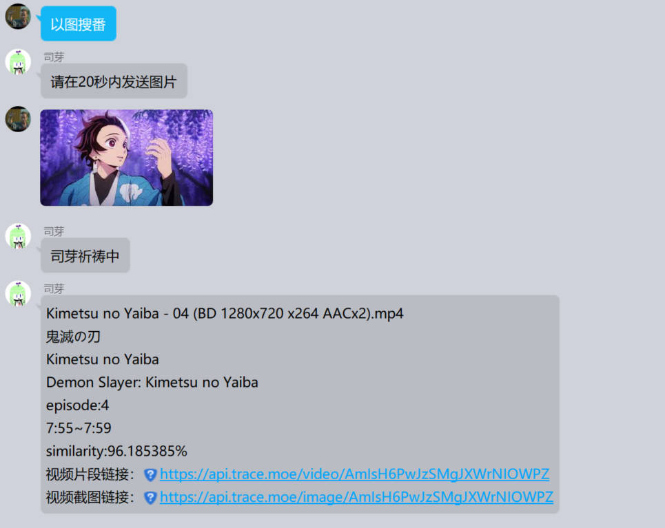
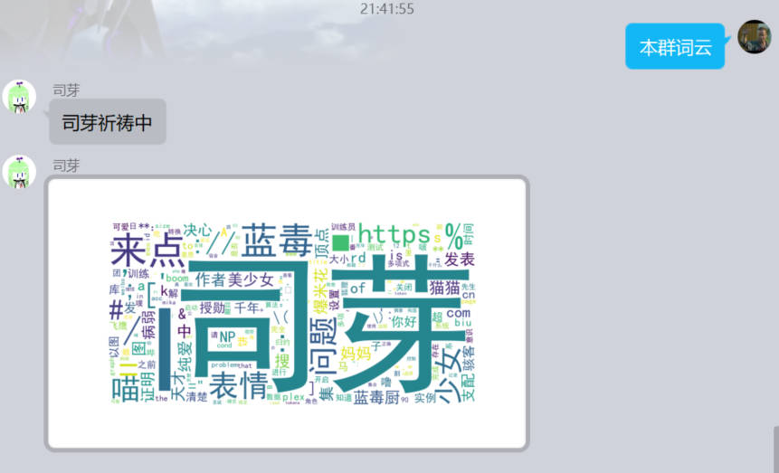

这里是司芽。和司芽打个招呼，说：你好，司芽！

tx的围追堵截造成了司芽的坎坷身世。如今，司芽运行在llonebot的linux版QQ上，由overflow连接到mirai并在该平台上运行。司芽以yiri-mirai，一杯柿子汁，半条嗒嗒鱼还有你的爱作为核心。
注：若无特殊说明，功能的开启和关闭指令需要管理员或群主发送才能生效。此外，在@司芽的时候请注意手机端的复制只能复制文本，无法实际复制@的内容。
给大伙整点饼
让司芽讲两句
司芽在自己被at或是提到自己名字时大概率发言，也可能以小概率主动插入聊天。司芽可能会连续多次发言。
当司芽发言时，司芽会读取前20条群聊天记录（不包括图片）并做出回应。
司芽的发言可能会有点奇怪。这就是司芽。
哔啵哔啵~呜哩哇啦噗嗤噗嗤！ ——司芽
发送“司芽，启动”开启该功能，发送“司芽，静默”关闭该功能（此命令不需要权限，任何人都可以设置）
让司芽颁个奖
要来点毛茸茸吗
司芽可以随机发送一些动物的图片。
发送“司芽动物园”，司芽会随机发送{狐狸、鬣狗、狗、兔狲、负鼠、狮子、薮猫、浣熊、水獭、豹、兔子、狞猫、美洲狮、貂、老虎、熊、臭鼬、水豚、狼、山羊}等动物中的一种的图片
发送“来点猫猫”，司芽会发送一张猫猫图片
发送“来点兔子”，司芽会发送一张兔子图片
发送“来点狐狸”，司芽会发送一张狐狸图片
要来点别的吗
司芽可以抽取发送者本人或是其他群友的历史发言，不管那是黑历史还是光荣历史
发送“来点自己”，司芽会在你的历史发言中随机抽取十条发出
你可以设置自己在司芽这里的昵称。当你设置了昵称后，其他用户可以发送“来点[你的昵称]”来让司芽抽取你的历史发言。
@司芽并发送“设置来点[你的昵称]”来设置你的昵称

如果你觉得某个群友很可爱
你可以让司芽帮你生成一张图片来宣传群友的可爱
@你觉得可爱的群友并发送真可爱，司芽会生成一张图片。
如果你觉得不止群友很可爱
司芽可以帮你喜欢的其他小可爱也生成图片来宣传
发送“xxx就是小天使”，司芽会帮你生成图片

红色的字/白色的字

什么叫你也是转的

什么叫你也是转的2

让我们看看群里都在聊些什么

虽然一直在摸鱼，但司芽实际上还是骰娘
在司芽诞生的时候，所有bot都是骰娘，所以司芽也是骰娘
然而事实上司芽从未跑过一次团
你可以访问dice！的官方文档来获得相关指令的说明。
虽然dice！现在有点落后了，但既然能用我们就不要动它.jpg
与dice！相关的重要信息：
感谢在司芽建设和维护的过程中提供了重大帮助的框架和插件。它们之中有的先于司芽沉寂了，有的仍在蓬勃发展。不管怎样，没有他们就没有司芽的今天。另外，如果你也想尝试搭建一个qq机器人，可以看看这些框架是否对你有所帮助和启发。
你已经全面地了解了司芽，成为了司芽的朋友！和好朋友打个招呼，说：你好，司芽！